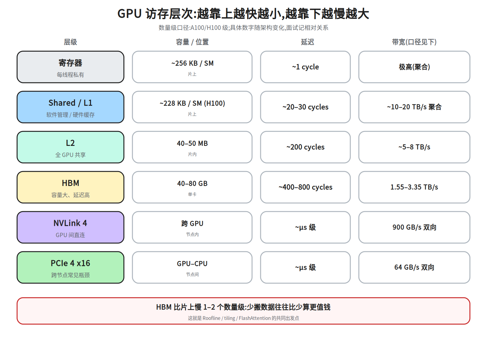
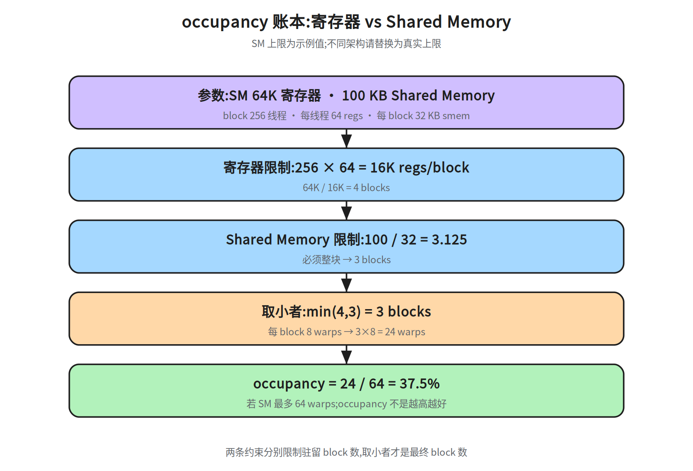
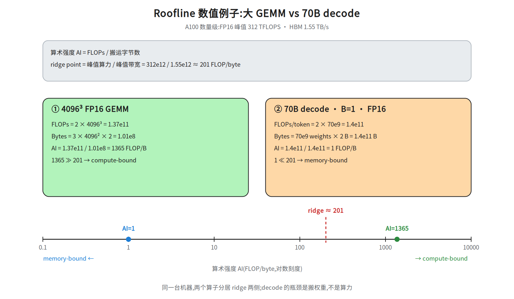
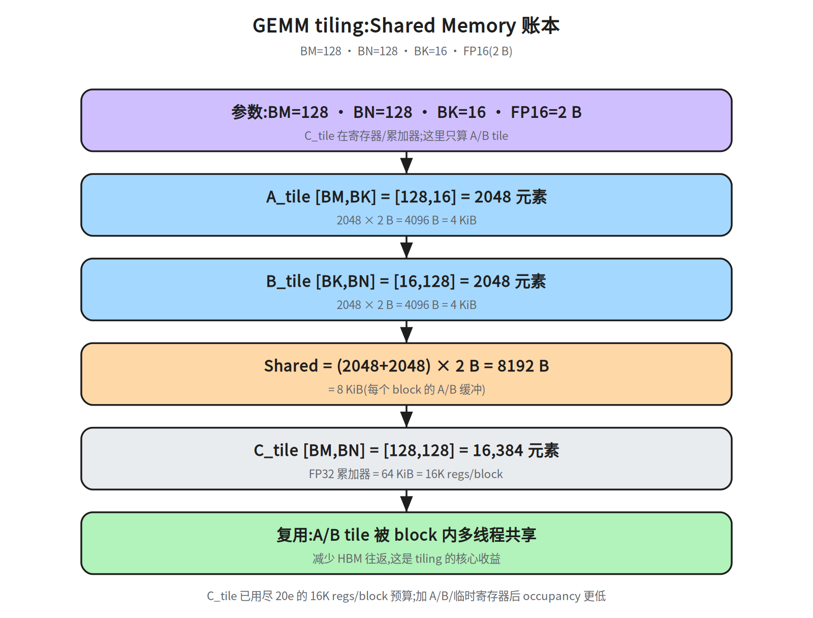
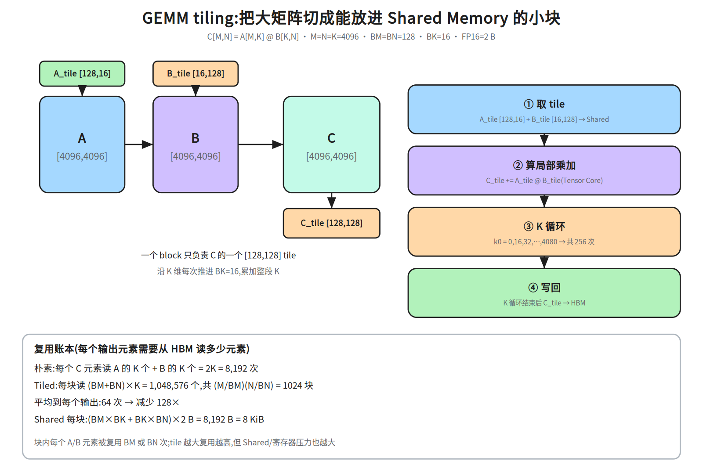
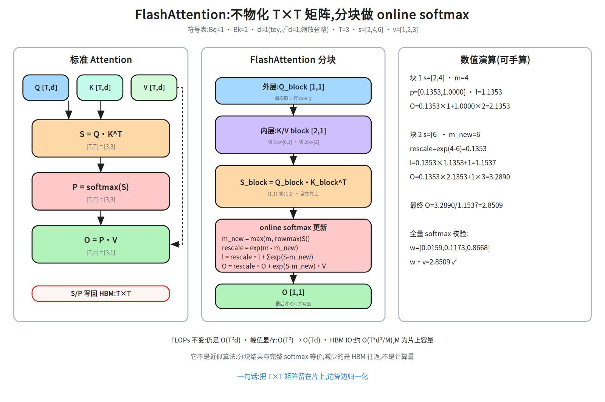
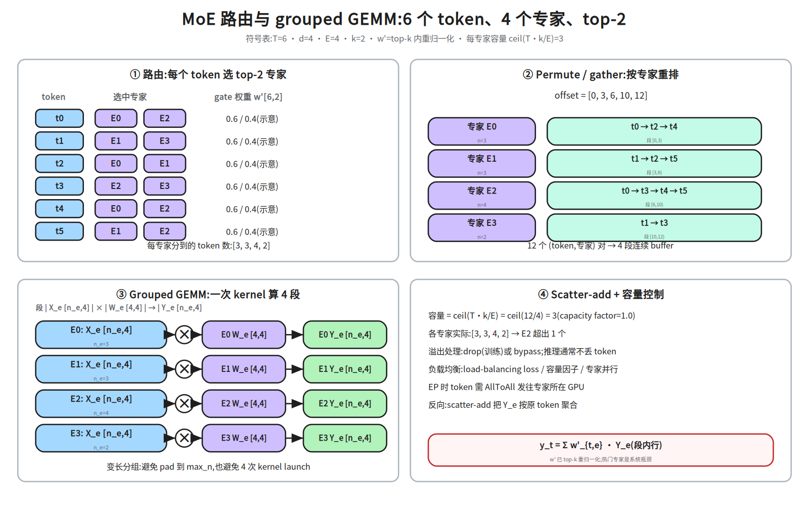
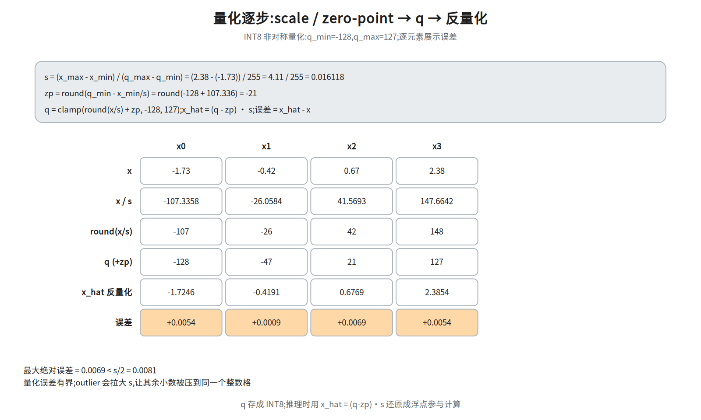

M2-1 · 单机与算子（地基）¶
本层回答：一块 GPU 内部到底发生了什么？为什么同样的 FLOPs，有的 Kernel 快 10 倍？ 训练和推理的性能上限，最终都由这一层的「访存 + 计算 + 并行」决定。
前置（按节）：
notes/02_attention.md §4（缩放点积）、notes/03_block.md §5（Block 组装）、notes/05_modern.md §3（GQA，可选）、notes/06_inference.md §3–5（KV Cache / prefill-decode）。建议路径（每次 45 分钟）： ① §2–3（GPU 架构 / CUDA 执行模型）；② §4–5（Roofline / 访存 / GEMM）； ③ §6–7（Attention / MoE Kernel）；④ §8–10（精度 / Profiling / 编译）。
深度标注：§2–6、§8–9 为必学；§7 MoE、§10 编译为加分；芯片指令集/PTX/SASS 为了解。
0. 依赖图（学习顺序）¶
graph TD
A["GPU 架构与访存层次"] --> B["CUDA 执行模型<br/>grid / block / warp"]
B --> C["Roofline<br/>计算密集 vs 访存密集"]
A --> C
C --> D["访存优化<br/>coalescing / tiling / bank conflict"]
D --> E["GEMM 与基础算子"]
E --> F["Attention Kernel<br/>FlashAttention / IO-aware"]
E --> G["MoE Kernel<br/>路由 / gather-scatter / 负载均衡"]
C --> H["精度与量化<br/>FP16/BF16/FP8/INT8"]
F --> I["Profiling<br/>定位并优化一个 Kernel 的瓶颈"]
G --> I
H --> I
E --> J["编译与工具链（旁支）<br/>MLIR/TVM/XLA/Triton/CUTLASS"]
J -.-> I汇点是 Profiling：先测再优化。编译/工具链是从算子与图优化分出的旁支， 不是 Profiling 的下游（
J -.-> I表示它反过来帮助定位/实现优化）。
1. 为什么先学单机¶
AI Infra 的所有上层系统，最终都要落到单卡上的 Kernel：
- 训练系统的 MFU，取决于每个 Kernel 的实际吞吐；
- 推理系统的吞吐和延迟，取决于 Attention/GEMM/访存效率；
- 量化、投机解码、PagedAttention，最终都要有 Kernel 支持；
- 集群层面的问题，也常表现为「单机 Kernel 没跑满」。
一句话：不理解单机，就无法判断瓶颈到底在计算、访存、通信还是调度。
2. GPU 架构与访存层次¶
GPU 不是「更快的 CPU」，而是为吞吐设计的并行处理器：
- 大量 SIMT 核心，用并行度隐藏延迟；
- 强调带宽和吞吐，而不是单线程延迟；
- 有复杂的显存层次，数据搬运往往比计算更贵。
2.1 关键部件¶
| 部件 | 作用 |
|---|---|
| SM（Streaming Multiprocessor） | GPU 的基本计算单元，内含 CUDA Core、Tensor Core、寄存器、Shared Memory、调度器 |
| CUDA Core | 通用标量/向量计算 |
| Tensor Core | 矩阵乘加单元，FP16/BF16/FP8/INT8 的高吞吐来源 |
| 寄存器 | 每线程私有，最快但数量有限 |
| Shared Memory | 每个 block 共享，可编程管理，用来做数据复用 |
| L1/L2 Cache | 硬件缓存，L2 全局共享 |
| HBM | 显存放数据的地方，容量大、带宽高，但延迟远高于片上 |
| NVLink / PCIe | GPU 之间、GPU 与 CPU 之间的互联 |
2.2 访存层次（数量级直觉）¶
| 层级 | 延迟（数量级） | 带宽（数量级） | 特点 |
|---|---|---|---|
| 寄存器 | ~1 cycle | 极高 | 每线程私有，用多了会降低 occupancy |
| Shared Memory | ~20–30 cycles | 每 SM 很高 | 软件管理，GEMM/Attention 的复用核心 |
| L1 Cache | ~30 cycles | 高 | 与 Shared Memory 共享片上资源 |
| L2 Cache | ~200 cycles | 数 TB/s | 全 GPU 共享 |
| HBM | ~400–800 cycles | 1.5–3.5 TB/s | 容量大，但相对计算很慢 |
| NVLink | — | 数百 GB/s 到 ~1 TB/s | 多卡通信 |
| PCIe | — | 数十 GB/s | GPU-CPU / 跨节点常见瓶颈 |
具体数字随架构变化，这里只记数量级和相对关系。面试时更重要的是：知道 HBM 比片上慢一到两个数量级，所以「少搬数据」往往比「少算」更值钱。

图里的口径（A100/H100 级，数量级）：
- 寄存器约
256 KB / SM，延迟约 1 cycle； - Shared Memory 与 L1 共享片上容量，H100 最多约
228 KB / SM可配置给 Shared； - L2 约
40–50 MB（A100 40 MB、H100 50 MB），全 GPU 共享； - HBM 单卡
40–80 GB，带宽1.55–3.35 TB/s（A100 40GB 1.55、A100 80GB 2.0、H100 SXM 3.35）； - NVLink 4 约
900 GB/s 双向（H100），PCIe 4 x16 约64 GB/s 双向。
单位口径：厂商常用十进制
GB/TB（1 GB = 10^9 B），操作系统/nvidia-smi常显示二进制GiB（1 GiB = 2^30 B = 1.0737 GB）。算显存账本时先统一单位，再比较“权重 vs KV”， 否则会凭空多出 7% 的误差。带宽同理：1.55 TB/s = 1550 GB/s ≈ 1443 GiB/s。
3. CUDA 执行模型¶
3.1 三层并行¶
- 一个 warp = 32 个线程（NVIDIA），同一 warp 的线程执行同一条指令（SIMT：单指令多线程）；
- occupancy = 一个 SM 上同时驻留的 warp 数 / 最大值。occupancy 高，能更好地隐藏访存延迟；
- 但 occupancy 不是越高越好：寄存器、Shared Memory 用得多，会限制驻留 warp 数。
occupancy 算例：SM 有 64K 寄存器、100 KB Shared Memory（示例值，非真实上限）；block 256 线程、每线程 64 寄存器、 每 block 32 KB Shared Memory →
- 寄存器限制：
256 × 64 = 16K寄存器/block →64K / 16K = 4blocks； - Shared Memory 限制：
100 / 32 ≈ 3blocks； - 取小者 3 blocks；每 block 8 warps → 24 warps；若 SM 最大 64 warps，occupancy = 24/64 = 37.5%。

图里把两条约束分开算再取小者：寄存器 64K/16K=4 blocks，Shared Memory
100/32=3.125 → 3 blocks，最终 3 blocks、24/64=37.5%。
3.2 一个最小 Kernel¶
__global__ void vec_add(const float* a, const float* b, float* c, int n) {
int i = blockIdx.x * blockDim.x + threadIdx.x;
if (i < n) c[i] = a[i] + b[i];
}
// launch: n 个元素，每 block 256 线程
vec_add<<<(n + 255) / 256, 256>>>(a, b, c, n);
这段代码的性能关键不是 +，而是：
- 相邻线程访问相邻地址 → 合并访问（coalescing）；
- 线程数足够多 → 能隐藏 HBM 延迟；
- 分支尽量少 → 避免 warp divergence。
3.3 同步与流水¶
__syncthreads()：block 内同步，GEMM 分块时常用；- Stream：多个 Kernel 可以并发；
- CUDA Graph：把一串 Kernel 录成图，减少 launch 开销，推理引擎常用；
- 异步拷贝（
cp.async/ TMA）：把数据搬运和计算重叠。
4. Roofline：判断瓶颈的第一工具¶
4.1 公式¶
- 计算密集（compute-bound）：AI 高，性能上限由峰值算力决定；
- 访存密集（memory-bound）：AI 低，性能上限由带宽决定。
4.2 三类典型算子¶
| 算子 | 算术强度 | 瓶颈 | 优化方向 |
|---|---|---|---|
| Elementwise（add/relu） | 很低（读+写） | 带宽 | 合并访问、向量化、融合 |
| GEMM | 高（随矩阵规模增长） | 大矩阵偏算力 | tiling、Tensor Core、流水 |
| Attention（prefill） | 中等 | 大 T 偏算力，小 T 偏访存 | FlashAttention、分块 |
| Attention（decode, batch=1） | 很低 | 带宽（权重 + KV） | batching、量化、KV 压缩 |
4.3 一个可验算的 Roofline 例子¶
以 A100 为例（数量级）：FP16 峰值约 312 TFLOPS，HBM 带宽约 1.55 TB/s →
ridge point（Roofline 拐点）= 峰值算力 ÷ 峰值带宽：
- 4096³ FP16 GEMM：FLOPs ≈
2 × 4096³ ≈ 1.37e11；搬运字节 ≈3 × 4096² × 2 ≈ 1.0e8； AI ≈ 1365 FLOP/byte ≫ 201 → compute-bound。 - 70B decode（batch=1）：每 token 约
2 × 70e9 = 1.4e11FLOPs；要读 FP16 权重约 140 GB； AI ≈ 1 FLOP/byte ≪ 201 → memory-bound。
注：A100 80GB 版带宽约 2 TB/s，ridge ≈ 150+；上面用的是 40GB SXM 口径，实际以本机 GPU 为准。
这两个例子是面试里最实用的「一眼判断」：大 GEMM 偏算力，decode 偏带宽。
batch 的影响：decode 每步读一次权重
2N字节，但可以同时算B个 token， 所以算术强度近似AI ≈ B（忽略 KV）。B ≈ ridge时 decode 从 memory-bound 翻到 compute-bound；A100 上约B ≈ 201。这解释了“为什么增大 batch 能提高 decode 吞吐”， 但 batch 太大会拉高延迟、增加 KV 显存，吞吐和延迟要一起看。图号按主题编排:正文里
20c(Roofline)先于20b(量化)出现,编号不代表学习步骤。

图里把每个数都展开：GEMM 的 FLOPs=2×4096³=1.37e11、Bytes=3×4096²×2=1.01e8、
AI=1365;decode 的 FLOPs=1.4e11、Bytes=1.4e11、AI=1。
两者分居 ridge(≈201)两侧,所以一个 compute-bound、一个 memory-bound。
decode 阶段是典型的 memory-bound：每生成一个 token，要把模型权重和 KV Cache 从 HBM 读一遍，算力大量闲置。这就是为什么推理优化里 batching、量化、GQA 如此重要。
5. 访存优化与 GEMM¶
5.1 三个基本问题¶
- 合并访问：一个 warp 的 32 个线程访问连续地址，硬件可以合并成少量内存事务；
- Bank conflict：Shared Memory 分成多个 bank，同一 warp 访问同一 bank 的不同地址会串行化；
- 数据复用：把反复使用的数据搬到 Shared Memory/寄存器，减少 HBM 往返。
一个小例子：Shared Memory 有 32 个 bank、每个 bank 4 B 宽。若 32 个线程访问
smem[tid * 32]，地址步长是 32 个 word，所有线程落到同一个 bank → 32 路冲突，
一次访问要串行 32 次。把数组按 33 填充（smem[tid * 33]）或按 bank 数重排，
就能让线程分散到不同 bank。面试里能说出“步长是 bank 数的整数倍会冲突”就够用了。
5.2 GEMM 分块（tiling）¶
矩阵乘 C[M,N] = A[M,K] @ B[K,N] 的核心是分块 + 复用：
// 每个 block 负责 C 的一个 tile
// 沿 K 维分块：A_tile [BM, BK], B_tile [BK, BN], C_tile [BM, BN]
for (int k0 = 0; k0 < K; k0 += BK) {
load A_tile, B_tile into shared memory;
__syncthreads();
for each thread:
accumulate C_tile += A_tile @ B_tile;
__syncthreads();
}
维度与 Shared Memory 账本（BM=128, BN=128, BK=16, FP16）：
A_tile [BM, BK]=[128, 16]，B_tile [BK, BN]=[16, 128]，C_tile [BM, BN]=[128, 128]；- Shared Memory ≈
(128×16 + 16×128) × 2 B = 8 KiB； - 每个 tile 被 block 内多个线程复用，HBM 读取次数从「每线程重复读」降到「每 block 读一次」。

账本：A_tile 128×16=2048 元素 = 4 KiB，B_tile 16×128=2048 元素 = 4 KiB，
Shared 合计 (2048+2048)×2 B=8192 B=8 KiB；C_tile 128×128 放寄存器/累加器，
不占 Shared Memory。注意:20e 的 16K 是整块总预算;C_tile 的 16K 只是累加器,加上 A/B/临时寄存器后整块超过 16K,occupancy 会低于 4 blocks。

图里把“为什么省 HBM”算成每个输出元素的读取次数（M=N=K=4096、BM=BN=128、BK=16、FP16）：
- 朴素实现：每个
C元素要读A的K个 +B的K个 =2K = 8192次； - tiled：每块读
(BM+BN)×K = 1,048,576个，共(M/BM)(N/BN) = 1024块， 平均到每个输出K(1/BM+1/BN) = 64次； - 两者相差
8192 / 64 = 128×；块内每个 A/B 元素被复用BM或BN次（tile 复用因子BM·BN/(BM+BN) = 64）； - Shared 每块
(BM×BK + BK×BN)×2 B = 8 KiB，这是能放进片上、又能保持较高 occupancy 的折中。
注意区分两个“复用”，不要混：
- 单个元素的复用次数：一个 A 元素被
BN=128个输出复用，一个 B 元素被BM=128个输出复用；- 块内平均复用因子
BM·BN/(BM+BN)=64，是“总乘加数 ÷ 总加载元素数”；- 总读取减少倍数
2BM·BN/(BM+BN)=128，还额外乘了朴素实现每个输出读 A、B 两遍。面试时说“平均每个输出从 2K 次读取降到 64 次，约 128×”最准确。
优化层次：
- 朴素实现：每个线程直接读 HBM，访存爆炸；
- Shared Memory tiling：一个 tile 的数据被多个线程复用；
- Register blocking：每个线程算多个输出，进一步提高复用；
- 双缓冲 / 异步拷贝：搬下一块的同时算当前块；
- Tensor Core：用
mma指令做矩阵乘加； - CUTLASS / Triton：工业级模板或 DSL，自动处理很多细节。
5.3 为什么 Tensor Core 要求对齐¶
Tensor Core 一次处理一个矩阵块（如 16×16×16），要求：
- 数据类型匹配（FP16/BF16/FP8/INT8）；
- 维度/步长满足对齐要求；
- 数据布局符合指令预期。
不满足时，编译器可能退回普通 CUDA Core，性能差距可达数倍。
5.4 Reduction 算子：LayerNorm / Softmax¶
这两个算子的共同点：沿某一维做 reduction（均值/方差/最大值/求和），再逐元素变换。
优化要点：
- 一次读入、片上 reduction（warp shuffle / shared memory）；
- 向量化加载，尽量合并访问；
- 与相邻算子融合（如
LayerNorm + residual、Softmax + dropout）； - 数值稳定：softmax 先减最大值；LayerNorm 的
E[x²] - E[x]²省一遍读取，但在 FP16/大均值时 可能发生抵消，精度敏感时用两遍算法或 Welford。
一个简化的 Triton softmax（一行一个 block）：
@triton.jit
def softmax_kernel(x, y, n, BLOCK: tl.constexpr):
offs = tl.arange(0, BLOCK)
mask = offs < n
vals = tl.load(x + offs, mask=mask, other=-float("inf"))
vals = vals - tl.max(vals, axis=0)
num = tl.exp(vals)
den = tl.sum(num, axis=0)
tl.store(y + offs, num / den, mask=mask)
# host 侧（仅演示 n <= BLOCK；n 更大时要多 block 循环）
# assert n <= BLOCK
# softmax_kernel[(1,)](x, y, n, BLOCK=triton.next_power_of_2(n))
# assert torch.allclose(y, torch.softmax(x, dim=0), atol=1e-5)
真实的高性能实现还要处理：多行/多 block、行内 reduction、warp-level 原语、向量化与边界。
LayerNorm 的参考实现（一行一个 token，d_model 维做 reduction）：
def layernorm(x, gamma, beta, eps=1e-5):
mu = x.mean(dim=-1, keepdim=True)
var = x.var(dim=-1, unbiased=False, keepdim=True)
x_hat = (x - mu) / torch.sqrt(var + eps)
return x_hat * gamma + beta
两遍算法（先均值、再方差）数值稳；一遍
E[x²]-E[x]²少读一遍，但大均值/FP16 时 容易发生抵消。kernel 实现常用 Welford 或分块统计，把 reduction 放在片上完成。高性能 LayerNorm kernel 的骨架：一行/一个 tile 一个 block → 向量化加载 → warp shuffle 或 shared memory 做两级 reduction（均值/方差）→ 片上归一化 + 仿射 → 一次写回；常和 residual add 融合。面试问“怎么写高性能 LayerNorm”，答这四步比背 API 有用。
6. Attention Kernel 与 FlashAttention¶
6.1 标准 Attention 的问题¶
中间矩阵 S/P 是 T × T：
- T=8K 时，单头 FP16 的
S就是 128 MiB（≈134 MB）； - 写回 HBM 再读出来做 softmax，产生大量不必要的显存流量；
- 计算量仍是
O(T²d)，但访存成为瓶颈。
6.2 FlashAttention 的核心¶
不把 T×T 矩阵写回 HBM，而是分块 + online softmax：
for each Q_block:
m, l, O = -inf, 0, 0 # running max / normalizer / output
for each K_block, V_block:
S = Q_block @ K_block.T / sqrt(d_head)
m_new = max(m, rowmax(S))
l = exp(m - m_new) * l + rowsum(exp(S - m_new))
O = exp(m - m_new) * O + exp(S - m_new) @ V_block
m = m_new
O = O / l
关键点：
- 计算量不变（仍是
O(T²d)），变的是访存； m/l是 online softmax 的 running statistics，保证分块结果与完整 softmax 等价；- 峰值显存/激活占用从
O(T²)降到O(Td)（不再物化T×T矩阵）； - HBM 读写量约
Θ(T²d²/M)（M 为 SRAM 容量；SRAM = 片上存储，含寄存器/Shared Memory）， 对 T 仍是二次方，只是常数项更小—— 不要说成 O(Td) 流量； - 例：T=8K、d=128 时，标准 attention 的
T×T分数矩阵单头 FP16 就是8192²×2B = 128 MiB；FlashAttention 不物化它，但 IO 仍随 T² 增长； - FlashAttention-2/3 进一步优化并行切分、warp 调度和低精度。

图右侧用 T=3、s=[2,4,6]、v=[1,2,3] 走了一遍 online softmax，数字可手算复核：
- 块 1：
s=[2,4]，m=4，p=[0.1353,1.0000]，l=1.1353，O=2.1353； - 块 2：
s=[6]，m_new=6，rescale=e^(4-6)=0.1353，l=0.1353×1.1353+1=1.1537，O=0.1353×2.1353+1×3=3.2890； - 最终
O/l=3.2890/1.1537=2.8509；全量 softmax 权重[0.0159,0.1173,0.8668]， 加权和同为2.8509，验证分块结果与完整 softmax 等价。
注意口径：FLOPs 仍是
O(T²d)；峰值显存/激活从O(T²)降到O(Td)； HBM IO 约Θ(T²d²/M)（M 为片上容量），对 T 仍是二次方，只是常数更小。 不要说成 O(T) 流量，也不要说成降低计算复杂度。对照标准 attention 的 HBM IO：读 Q/K/V 约
Θ(Td)，写回并重读T×T的 S/P 约Θ(T²)， 合计Θ(T² + Td)。FlashAttention 把T²项压到Θ(T²d²/M)；只有M ≫ d²时T²d²/M才明显小于T²。这才是“同样的 FLOPs，少搬很多数据”的准确条件。面试高频：FlashAttention 不是「近似算法」，也不减少 FLOPs；它通过 IO-aware 的分块和 online softmax，减少 HBM 读写，从而更快、更省显存。
7. MoE 算子¶
MoE（Mixture of Experts）把 FFN 换成多个专家，每个 token 只激活 top-k 个：
Kernel 层面的难点：
- 路由与分发：按专家把 token gather 到一起；
- Grouped GEMM：每个专家一个 GEMM，但批量大小不同，需要分组/变长 GEMM；
- 负载均衡：热门专家 token 多、冷门专家少 → 需要 capacity factor（每专家容量系数）、 token dropping（容量溢出的 token 被丢弃或绕过）、load-balancing loss（路由概率均衡惩罚）；
- AllToAll：专家并行（EP）时，token 要跨 GPU 发送；
- 融合：路由、gather/scatter、GEMM、scatter-add 尽量融合，减少访存。

图里用 T=6、d=4、E=4、top-2 走了一遍系统链路：
- 路由：每个 token 选 top-2 专家，得到 12 个
(token, 专家)对； - permute：按专家把 token 重排成 4 段连续 buffer，
offset=[0,3,6,10,12]； - grouped GEMM：每个专家一段
X_e [n_e,d] @ W_e [d,d_out]，n_e分别为3/3/4/2， 一次 kernel 算完变长分组，避免 pad 到max_n或 4 次 launch； - scatter-add：按原 token 聚合
y_t = Σ w'_{t,e} · Y_e。
容量与负载均衡：capacity factor 为 1.0 时，每专家容量 ceil(T·k/E)=ceil(12/4)=3；
本例 E2 分到 4 个 token，超出 1 个，需要 drop（丢弃）或 bypass（绕过残差）。
热门专家会造成 capacity 溢出、通信热点和显存不均；load-balancing loss、容量因子、
专家并行（EP）的 AllToAll 都是围绕这个问题。
训练 vs 推理：训练时可以用 capacity factor + token drop 来控制单卡显存和计算量， 丢掉的 token 由 aux loss 惩罚；推理通常不丢 token（会影响输出质量），容量不足时 排队、改路由或扩专家。现代变体还有 expert-choice（专家选 token）、shared expert （常驻共享专家）和 aux-loss-free 负载均衡（用 bias 调整路由，而不是加辅助损失）。
gate_i与w'的关系：代码里的gate_i是 softmax 后的原始路由权重；图里的w'是在 top-k 选出后再归一化的权重（w'_i = gate_i / Σ_{j∈topk} gate_j）。实现时常做这一步， 让被选中的专家权重和为 1；两种写法都常见，比较时要看是否重归一化。MoE 的「参数量大、计算量小」是它的卖点，但系统上会被负载不均、通信、显存拖累——这也是 M2-2 专家并行的核心问题。
8. 精度与量化¶
8.1 常见数值格式¶
| 格式 | 字节 | 指数/尾数位 | 特点 | 典型用途 |
|---|---|---|---|---|
| FP32 | 4 | 8 / 23 | 精度高、慢、占显存 | 基准、累加 |
| TF32 | 4（19 位有效） | 8 / 10 | NVIDIA 张量核心加速 | 训练/推理折中 |
| FP16 | 2 | 5 / 10 | 范围小，最大约 65504，可能溢出 | 混合精度训练、推理 |
| BF16 | 2 | 8 / 7 | 范围与 FP32 接近，精度略低 | 现代训练/推理主流 |
| FP8 E4M3 | 1 | 4 / 3 | 需要 scaling；范围小、精度较高 | H100 起推理/部分训练 |
| FP8 E5M2 | 1 | 5 / 2 | 范围更大、精度更低 | 梯度/对范围敏感的场景 |
| INT8 / INT4 | 1 / 0.5 | — | 需要 scale/zero-point | 推理、端侧 |
“字节数”不等于“有效精度”：BF16 和 FP16 都是 2 B，但 BF16 指数位与 FP32 相同（范围大）， 尾数只有 7 位（精度低）；FP16 反过来。训练默认用 BF16 主要是为了范围稳定，不是为了更高精度。 FP8 的 E4M3/E5M2 也不是“一种格式”，选哪种取决于你要范围还是精度。
8.2 混合精度¶
- 计算用 FP16/BF16，累加用 FP32；
- FP16 需要 loss scaling 防止梯度下溢；BF16 范围大，通常不需要；
- FP8 需要 per-tensor/per-block scaling，且对异常值敏感。
8.3 量化基本式¶
- per-tensor / per-channel / per-group：粒度越细，精度越好，元数据越多；
- weight-only（W4A16）：只量化权重，适合 decode 的访存瓶颈；
- W8A8 / FP8：权重和激活都量化，需要校准；
- outlier：少数极大值会拉大 scale，常用保留 outlier、混合精度、per-group 解决。

图里用 4 个值走完 s → zp → q → x_hat 的每一步：x=[-1.73,-0.42,0.67,2.38]、
s=(2.38-(-1.73))/255=0.016118、zp=-21,得到 q=[-128,-47,21,127];
最大绝对误差 0.0069 < s/2 = 0.0081。
量化不是「免费加速」：它用精度换带宽/算力，必须做精度评测（ perplexity、任务指标、长尾 case）。
9. Profiling：不要猜，先测¶
9.1 工具分工¶
| 工具 | 看什么 |
|---|---|
| Nsight Systems | 时间线：CPU/GPU 是否空转、Kernel 顺序、NCCL、数据拷贝 |
| Nsight Compute | 单个 Kernel：occupancy、内存吞吐、计算吞吐、stall 原因 |
| torch.profiler | Python/PyTorch 层：算子耗时、显存、调用栈 |
| nvidia-smi / DCGM | 利用率、显存、温度、功耗、ECC |
9.2 读 Profile 的顺序¶
- 先看时间线：GPU 有没有空转？是不是在等数据/通信？
- 找 Top Kernel：哪些 Kernel 占了大头？
- 看 Kernel 类型：GEMM、Attention、elementwise、reduce、copy？
- 算 Roofline：它是 compute-bound 还是 memory-bound？
- 看指标：occupancy 够不够？内存吞吐是否接近峰值？warp stall 在哪？
- 做实验：改 block size、tile size、向量化、融合，重新测。
9.3 常见性能陷阱¶
- benchmark 没 warmup、没同步，测到的是 launch 开销；
- 比较不同 batch size / 精度 / 输入长度，结论不可比；
- 只看平均延迟，不看 P99；
- 把理论峰值当成可达性能；
- 忽略数据搬运和 Kernel launch 开销。
10. 编译与工具链¶
10.1 计算图与 IR¶
深度学习框架先把模型变成计算图，再在图上做优化（IR = 中间表示；pass = 一次图变换）：
- 常量折叠、死代码消除；
- 算子融合（如
LayerNorm + residual、GEMM + bias + activation）； - 布局转换（NCHW/NHWC、转置）；
- 内存规划（复用 buffer、减少峰值显存）；
- 并行/流水调度。
10.2 主流工具¶
| 工具 | 机制/定位 | 代价 | 何时选 |
|---|---|---|---|
| MLIR | 多层 IR + 可插拔 pass | 学习曲线陡 | 自研编译器/新硬件 |
| TVM | 图优化 + schedule + auto-tuning | 调优耗时 | 跨硬件部署 |
| XLA | JIT + 图优化 | 动态形状/生态限制 | TensorFlow/JAX |
| Triton | Python DSL 写 Kernel | 极致性能不如手写 | 快速迭代、中等性能 |
| CUTLASS | CUDA C++ 模板库 | 模板复杂 | 工业级 GEMM/Attention |
| TileLang | 面向 tile 的 Kernel DSL | 生态较新 | 实验性 Kernel |
一个融合例子：GEMM → bias add → GELU 在图上融合成一个 Kernel，省掉中间结果的 HBM 往返；
LayerNorm + residual 同理。融合的代价是 Kernel 更复杂、寄存器/Shared Memory 压力更大。
一个布局例子：卷积的 NCHW → NHWC 变换，本质是把通道维放到最内层，让相邻线程读到 相邻通道；GEMM 则希望 K 维连续（K-major），才能向量化加载并喂给 Tensor Core。 布局变换本身可能引入一次全局 copy——所以编译器要判断“变换的收益是否大于搬运成本”， 不能看到不连续就无脑插 transpose。
10.3 选型直觉¶
- 追求极致性能、可控性：手写 CUDA/CUTLASS；
- 快速迭代、中等性能：Triton；
- 整图优化、跨算子融合：MLIR/TVM/XLA；
- 新硬件适配：芯片工具链 + 编译器后端。
编译器不是魔法：它只能在 IR 层面做等价变换，真正的性能上限仍由硬件和算法决定。 PTX 是 NVIDIA 的虚拟指令集，SASS 是实际机器码；了解即可，面试更常问「编译器如何从高层 IR 生成 Kernel」。
10.4 AI 芯片工具链与软硬件协同（边界说明）¶
本层以 NVIDIA GPU 为主。AI 芯片方向还要补：
- 芯片 Runtime、算子库、量化工具、模型转换与评测；
- Ascend C / BangC 等厂商 DSL；
- 软硬件协同：模型结构 ↔ 数值格式 ↔ 互联拓扑 ↔ 指令集；
- HPC：多节点强扩展、通信与计算重叠。
这些内容在 M2-6（前沿与端侧）展开；面试算子岗时至少要能说清「工具链各层解决什么问题」。
面试要点¶
- 为什么 GPU 快？ → 大量并行核心 + 高带宽，用吞吐换延迟；适合数据并行。
- Shared Memory 和 L1 的区别？ → Shared Memory 由软件显式管理、可预测；L1 由硬件缓存、不可控。
- 什么是 occupancy？越高越好吗？ → 驻留 warp 数 / 最大 warp 数；高 occupancy 有助于隐藏延迟，但受寄存器/Shared Memory 限制，不是绝对越高越好。
- GEMM 为什么要 tiling？ → 提高数据复用，减少 HBM 往返；配合寄存器分块和 Tensor Core。
- FlashAttention 为什么快？ → 不减少 FLOPs，减少 HBM 读写；分块 + online softmax，IO-aware。
- 怎么判断 compute-bound 还是 memory-bound？ → 算算术强度，和机器 roofline 对比；再看 profiler 的计算/内存吞吐。
- MoE 算子的难点？ → 路由、gather/scatter、grouped GEMM、负载均衡、AllToAll。
- FP16 和 BF16 怎么选？ → FP16 精度高但范围小；BF16 范围大、训练更稳，现代训练常用 BF16。
- 量化为什么会掉精度？ → scale 截断、outlier、激活分布变化；需要校准和精度评测。
- 编译器能做什么优化？ → 常量折叠、算子融合、布局转换、内存规划、代码生成。
常见坑¶
- 把 FlashAttention 说成「降低计算复杂度」：它降低的是访存，计算仍是 O(T²d)。
- 忽略合并访问和 bank conflict：同样的 FLOPs，访存方式不同可能差数倍。
- 只看理论峰值：实际可达性能受 occupancy、访存、指令依赖限制。
- benchmark 不 warmup/不同步：测到的是噪声。
- 量化只看速度不看精度：必须做任务级评测。
- 把编译器当银弹：图优化无法弥补算法/数据布局的根本问题。
- 忽略 Kernel launch 和 Python 开销：小算子多时，框架开销可能超过计算。
动手清单（30–60 分钟）¶
环境：任意 NVIDIA GPU；没有 Nsight Compute 时用
torch.profiler替代； ridge point 用本机 GPU 的峰值算力/带宽算，不要直接套 A100 数字。
- Roofline 实测：用
torch.profiler跑一个 4096³ FP16 matmul（先 warmup 10 次， 用torch.cuda.synchronize()或 CUDA events 计时），算实际 TFLOPS 和算术强度， 和本机 ridge point 比较。 - Triton softmax：实现上面的 softmax kernel，用
torch.softmax做allclose正确性检查， 再扫不同BLOCK大小，记录延迟和带宽。 - Profile 一个 Kernel：用 Nsight Compute 看 occupancy、memory throughput、stall 原因， 写一句「瓶颈是 compute 还是 memory，下一步改什么」。
验收标准：能对一个 Kernel 给出「瓶颈判断 + 一个可验证的优化方向」，且 softmax 结果数值正确， 而不是只报一个耗时数字。
相关图¶
结构/机制图：
20h_memory— GPU 访存层次：容量、延迟、带宽（A100/H100 数量级）；20i_gemm_reuse— GEMM tiling：分块、K 循环、复用账本；20j_flash_attn— FlashAttention：分块 + online softmax 数值链；20k_moe_grouped— MoE：多 token 路由、permute、4 专家 grouped GEMM、容量控制。
数值/账本图：
20c_roofline— Roofline 数值例子(GEMM vs 70B decode，含 ridge 对比轴)；20b_quant— INT8 量化的逐步账本(scale / zero-point / 误差)；20e_occupancy— occupancy 账本（寄存器 vs Shared Memory）；20f_tiling— GEMM tiling 的 Shared Memory 账本。
下一步¶
- 推理线：M2-3 推理系统 → M2-4 分布式底座 → M2-5 平台与稳定性。
- 训练线（若还没走推理线）：M2-4 分布式底座 → M2-2 训练系统 → M2-5。
- 不要从 M2-3 直接跳到 M2-2 而跳过 M2-4；训练系统需要网络/存储/调度基础。